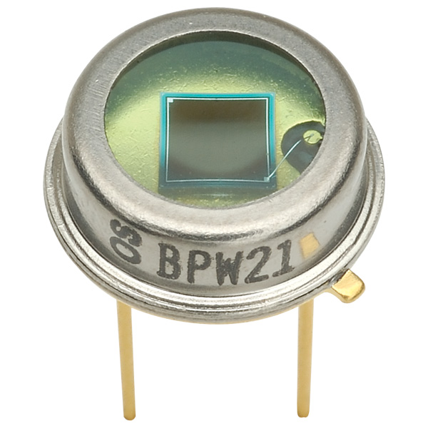
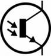

1.6.5. Фототранзисторы
Фототранзистор — оптоэлектронный полупроводниковый прибор, вариант биполярного транзистора. Отличается от ранее изученного тем, что область базы доступна для светового облучения, за счёт чего появляется возможность управлять усилением электрического тока с помощью оптического излучения.
Фототранзисторы обладают значительной большей, чем фотодиоды, чувствительностью — порядка сотни миллиампер на люмен.
Обозначение фототранзистора на электрических схемах → 
Фототранзистор имеет структуру n-p-n или p-n-p транзистора и может усиливать ток. Дырки электронно-дырочных пар, рождённых излучением, находятся в базе, а электроны переходят в эмиттер или коллектор. При увеличении положительного потенциала базы происходит усиление фототока за счёт инжекции электронов из эмиттера в базу.
Биполярный фототранзистор — полупроводниковый прибор с двумя p-n-переходами — предназначен для преобразования светового потока в электрический ток. При освещении фототранзистора в его базе генерируется электронно-дырочные пары. Неосновные носители зарядов переходят в область коллектора и частично в область эмиттера. При этом потенциалы эмиттера и коллектора относительно базы изменяются. Эмиттерный переход смещается в прямом направлении, и даже небольшое изменение его потенциала вызывает большое изменение тока коллектора, то есть фототранзистор является усилителем. Ток коллектора освещенного фототранзистора оказывается достаточно большим — отношение светового потока к темновому велико (несколько сотен). Биполярный фототранзистор подобен обычному биполярному транзистору, между выводами коллектора и базы которого включен фотодиод. Таким образом, ток фотодиода оказывается током фототранзистора и создает усиленный в n раз ток в цепи коллектора. Если на фототранзистор подается только электрический сигнал, его параметры почти не отличаются от параметров обычного транзистора.
Фототранзистор можно включать по схемам со свободным коллектором, со свободной базой и со свободным эмиттером. На фототранзистор можно подавать оптические и электрические сигналы. Без входного электрического сигнала, который обычно необходим для смещения, компенсирующего наводки, фототранзистор работает как фотодиод с высокой интегральной чувствительностью, небольшой граничной частотой и большим темновым током. Фототранзисторы целесообразно использовать для регистрации больших световых сигналов; при регистрации малых световых сигналов следует подать положительное смещение на базу. Применяют два варианта включения фототранзисторов: диодное — с использованием только двух выводов (эмиттера и коллектора) и транзисторное — с использованием трех выводов, когда на вход подают не только световой, но и электрический сигналы.
Фототранзисторы применяют в оптронах, устройствах автоматики и телеуправления, в приборах уличного освещения и пр.